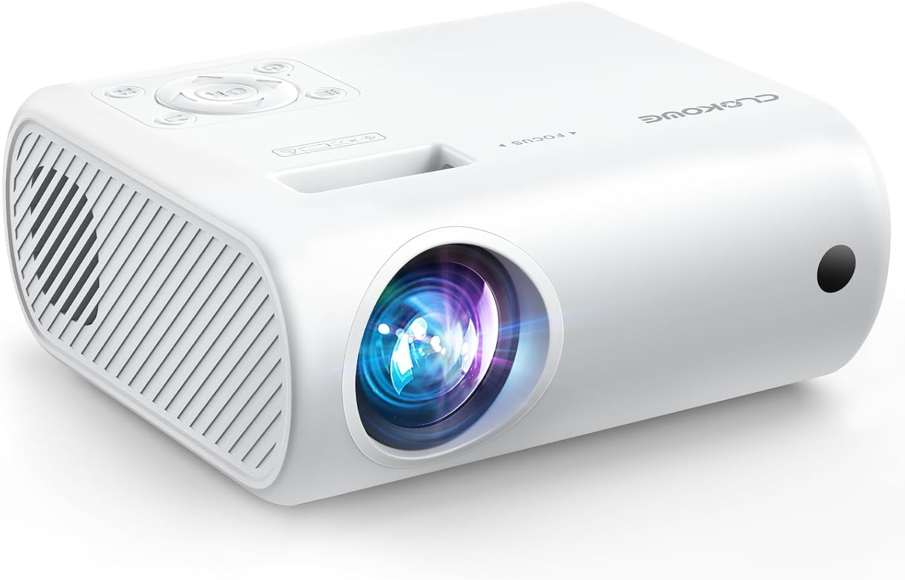
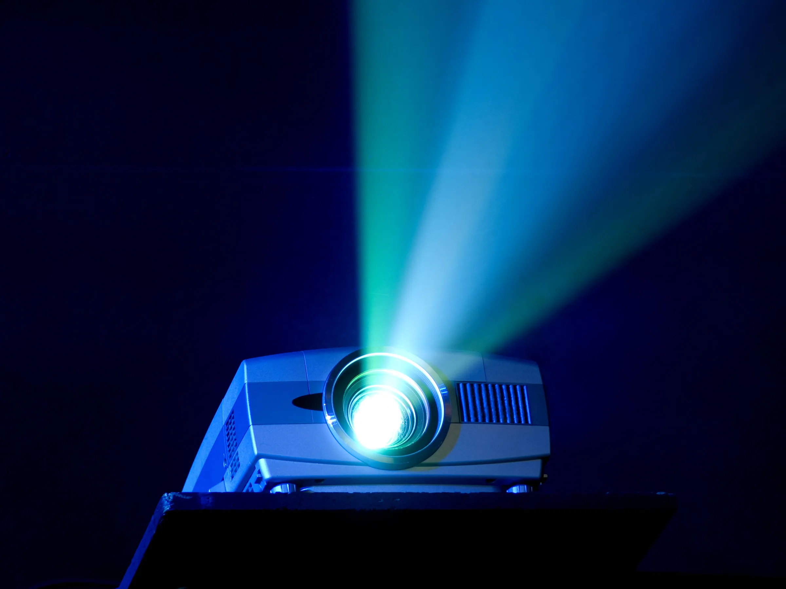
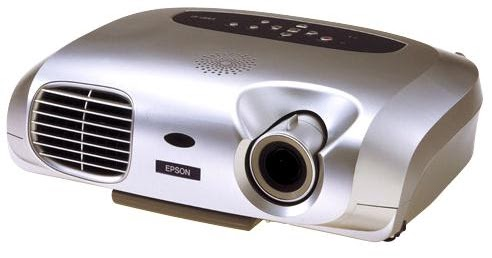
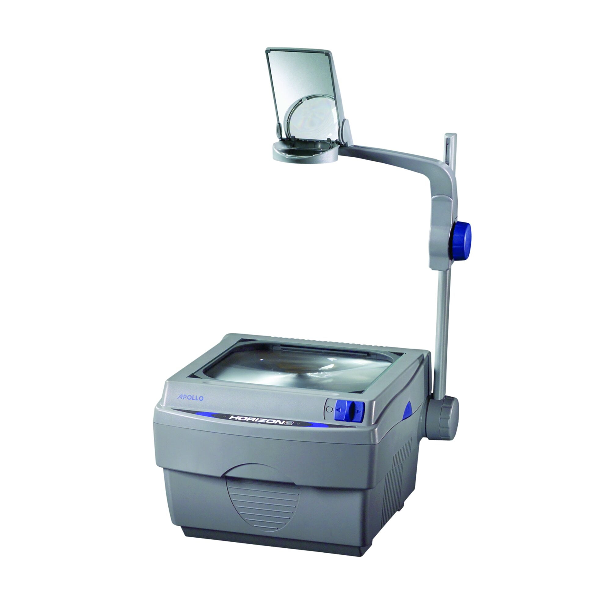
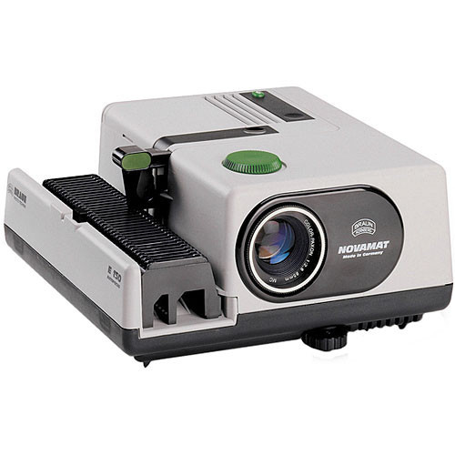

| العنصر | التفاصيل |
|---|---|
| المسميات | جهاز عرض الصور المختلفة |
| التصنيف |
مسار الأشعة: ضوء مباشر الوظيفة: جهاز عرض المواد التي يُعرضها: الأفلام الثابتة، الشفافة، الصامتة، الناطقة |
| المكونات |
مصباح، مرآة مقعرة عاكسة، مروحة عدسة مجمعة لتجميع الضوء زجاج سميك يمتص الحرارة عدسة إسقاط محدبة مفتاح ضبط الصورة حامل الفيلم مفتاح لتحديد وضع كل إطار في الفيلم |
| التشغيل |
معرفة قيمة الفولت ومطابقته للجهاز تركيب الفيلم في إحدى بكرات الرأس معكوسًا خلع العدسة الأمامية من الجهاز ووضع الرأس الحامل للفيلم ثم توضع العدسة في الجزء الأمامي بدء العرض والتحكم في تسلسل الصور بلف البكرة الثانية يدويًا توضيح الصورة على الشاشة بواسطة عدسة الإسقاط الأمامية |
| المميزات |
سهولة التشغيل، سهولة إنتاج البرامج الخاصة سهل الحمل والنقل جذب انتباه التلاميذ التحكم في زمن العرض لا يمكن حدوث خطأ في التسلسل المواد المعروضة معظمها منتجة تجاريًا |
| العيوب |
عدم القدرة على تغيير الترتيب أثناء العرض سرعة تلف الفيلم الثابت وتأثره بالبصمات الإعتام شبه التام للغرفة تعطل المروحة، كسر المصباح، تقطع ثقوب الفيلم الجهاز غالي الثمن، يحتاج شاشة عرض ثابتة |
| العنصر | التفاصيل |
|---|---|
| المسميات |
الداتا شو عرض البيانات والفيديو عرض برامج الوسائط المتعددة العرض بالبلور السائل العرض الإلكتروني |
| التصنيف |
مسار الأشعة: ضوئي مباشر الوظيفة: جهاز عرض المواد المعروضة: البيانات من الحاسب أو شرائط الفيديو فكرة العمل: تعتمد على إسقاط الضوء على شريحة LCD تعرض المحتوى من جهاز كمبيوتر أو وسائط أخرى. |
| المكونات |
- وحدة الإضاءة والإسقاط - وحدة مفاتيح التحكم - وحدة الطاقة - قائمة التحكم - عدسة التركيز - لوحة التوصيلات للتيار الكهربائي - وحدة مدخلات الشاشات والصوت - صندوق معدني يحتوي على: مصباح هالوجين، مروحة، مرشحات ضوئية، لوحة الكريستال السائل (LCD) - وحدة التحكم عن بعد |
| التشغيل |
- الضغط على مفتاح التشغيل الرئيسي لتشغيل الدائرة الكهربائية والمروحة - الضغط على زر القوائم للتحكم في شكل العرض - عند الانتهاء: يتم الضغط على مفتاح المصباح ثم مفتاح التشغيل الرئيسي لفصل المروحة والتيار الكهربائي ثم تغطية العدسة |
| المميزات |
- إمكانية توصيل الجهاز بعدة أجهزة - سهل الاستخدام والتشغيل والحمل - يمكّن المعلم من عرض الوسائط المتعددة - عرض المادة بشكل متسلسل وجذاب - زيادة الدافعية والتفاعل أثناء التعلم - يدعم التعلم الجماعي |
| العيوب |
- الحاجة إلى إعتام شبه تام للغرفة - الحاجة لشاشة عرض مناسبة - ارتفاع السعر وغلاء قطع الغيار |
| العنصر | التفاصيل |
|---|---|
| المسميات |
جهاز عرض الشفافيات جهاز عرض فوق الرأس جهاز عرض اللوحات الشفافة السبورة الضوئية |
| التصنيف |
مسار الأشعة: غير مباشر، لا يحتاج لإظلام القاعة الوظيفة: جهاز عرض المواد المعروضة: الشفافيات التعليمية، الأجسام المعتمة الصغيرة، الأجسام الشفافة ثلاثية الأبعاد |
| المكونات |
- صندوق بلاستيكي يحتوي على فتحات تهوية - ذراع علوي عليه: عدسة محدبة، مرآة مسطحة، عدسة توضيح - منصة عرض، مفاتيح تشغيل - من الداخل: مروحة تبريد، مصباح، عاكس ضوء، عدسات مكثفة ومجمعة، لوح زجاجي لامتصاص الحرارة |
| التشغيل |
- معرفة قيمة الفولت للجهاز - وضع الجهاز في مقدمة القاعة - تشغيل المروحة ثم المصباح - وضع المادة التعليمية معدولة على منصة العرض - ضبط الصورة على الشاشة |
| المميزات |
- بديل فعال للسبورة العادية في التعلم الجماعي - سهل التشغيل، سهل الحمل، قليل التكلفة وسهل الصيانة - جهاز تفاعلي، سهل إنتاج المواد المعروضة - لا يحتاج إلى إظلام تام |
| العيوب |
- تعطل المروحة أو المصباح - كسر اللوح الزجاجي أو العدسات - لا يصلح للتعليم الفردي - تلف المادة التعليمية - التأثر بالانحراف الزاوي أو تدني مستوى المباني |
| العنصر | التفاصيل |
|---|---|
| المسميات |
جهاز عرض الشرائح 5×5 جهاز عرض الشرائح الفوتوغرافية جهاز الدياسكوب |
| التصنيف |
مسار الأشعة: مباشر عند العرض على الشاشة يحتاج لإظلام تام وضع المادة: مقلوبة ومعكوسة الوظيفة: جهاز عرض فقط المواد المعروضة: الشرائح، الأفلام الثابتة، الصور الفوتوغرافية المكبرة |
| المكونات |
- مروحة - مصباح - مرآة مقعرة - عدستان محدبتان لتجميع وتوزيع الضوء - قطعة زجاج سميكة لامتصاص الحرارة - اسطوانة عدسة - حامل شرائح - مفاتيح تحكم: تشغيل، إيقاف، تسجيل، تقديم، استرجاع، ماتورين |
| التشغيل |
- وضع المادة في الحامل مقلوبة ومعكوسة - إظلام القاعة تمامًا - تشغيل المروحة - تشغيل المصباح |
| المميزات |
- تكبير الشرائح - مناسب للتعليم الجماعي - عرض متسلسل للموضوعات - سهل التشغيل والحمل - إمكانية التحكم في العرض - إعداد الشرائح بسهولة وتكلفة منخفضة |
| العيوب |
- لا يعرض إلا نوع واحد من الشرائح (5×5) - الشرائح عرضة للكسر - يوضع الجهاز في آخر القاعة - تعطل المروحة أو المصباح - كسر في اللوح الزجاجي أو العدسة |
| العنصر | التفاصيل |
|---|---|
| المسميات |
جهاز عرض الصور المعتمة الفانوس السحري العارض المعتم الأوبيك جهاز عرض المواد غير النافذة الابيسكوب الابيدياسكوب الانتسكوب |
| التصنيف |
مسار الأشعة: منعكسة وضع المادة: معكوسة يوضع في منتصف القاعة يحتاج لإظلام تام المواد المعروضة: الصور المعتمة، الكتب، الخرائط، الرسومات الوظيفة: جهاز ضوئي للعرض فقط |
| المكونات |
- مصباح قوي - مرآة مقعرة لعكس الضوء - حامل للمادة - مرآة لاستقبال الأشعة - عدسات لتوزيع الضوء - مروحة للتبريد - عدسة للعرض - منصة عرض - فتحات تهوية - مفاتيح تحكم - حامل للجهاز |
| التشغيل |
- وضع الجهاز في منتصف القاعة - وضع المادة معكوسة على المنصة - تشغيل المروحة ثم المصباح - تحريك العدسة لتوضيح الصورة |
| المميزات |
- يُستخدم في التكبير - ضبط البعد البؤري يدويًا - عرض الصور المعتمة بكل أنواعها - يمكن استخدامه لعرض سلسلة متصلة من الصور - يعمل حتى في وجود انحراف زاوي |
| العيوب |
- يوضع في منتصف القاعة مما قد يسبب إزعاجًا - يحتاج إلى إظلام تام للعمل بفعالية - لا يحتوي على مفتاح تشغيل واضح - منصة العرض صغيرة الحجم - يعمل على فرق جهد ثابت (220 فولت) |